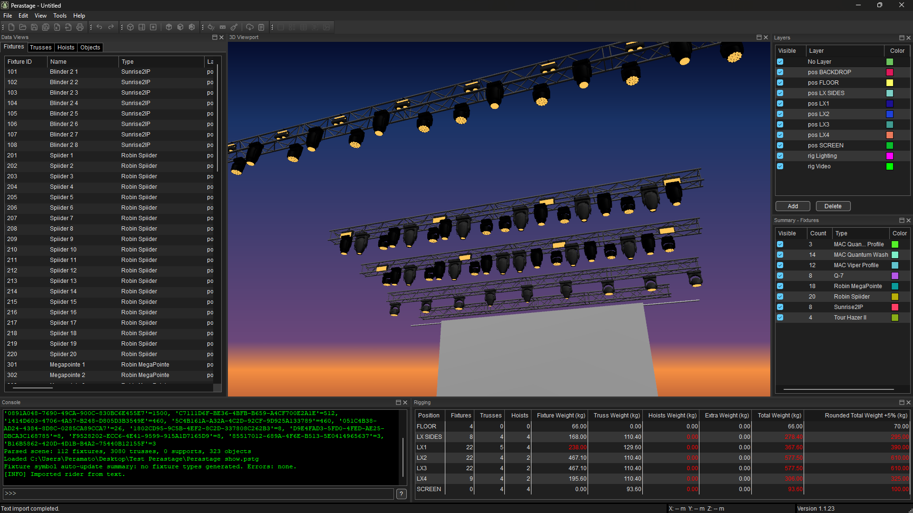

MVR workflows
Open, merge, edit and export MVR scenes while preserving interoperable scene data.
MVR & GDTF workflows
Perastage is a free, cross-platform desktop application for practical MVR and GDTF workflows. Review rigs in 2D and 3D, inspect scene and fixture data, organize and edit projects, build production layouts and export interoperable MVR files.

Perastage brings MVR, GDTF, visualization, inspection and production documentation into one focused desktop workflow.
Open, merge, edit and export MVR scenes while preserving interoperable scene data.
Work with local fixture libraries and GDTF Share, including improved search, revision and DMX mode information.
Inspect and edit scene structure from technical plan views and spatial 3D views.
Inspect MVR packages, scene structure, GDTF definitions, DMX modes, resources and source XML without modifying the original file.
Build printable layouts, legends and technical documentation and export them to PDF.
Turn rider-style text and PDF content into structured scene elements.
Use tables, patch tools, grouping, bulk editing, commands and scene transformation tools for practical project work.
Use experimental local interfaces for controlled automation and integration, including OSC and MCP-based workflows.
Start from an MVR file, import show data or create scene content inside Perastage.
Use the 2D/3D workspaces, Inspector and editing tools to understand and adjust the project.
Produce layouts and PDF documentation or export the updated MVR scene for use in other compatible applications.